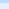
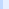
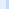
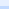

最新更新日：2007/04/24
Mayaaとは
MayaaはHTMLをベースとしたテンプレートによるプログラマとデザイナの作業分担を強く意識したWEBフロントサービスエンジンです。
(詳しい情報)
|  | ||
|  | 最新版ダウンロード |  |
|  |
News
ひまわり証券が国産オープンソースJ2EEフレームワークSeasar2を採用し新サイト構築 (2006/10/17)
日経ITProで事例が紹介されました。
日経ITProで事例が紹介されました。
(過去のNews)
Information
2007/04/24
2007/04/21
2007/04/08
2007/03/08

supported by YourKit Java Profiler